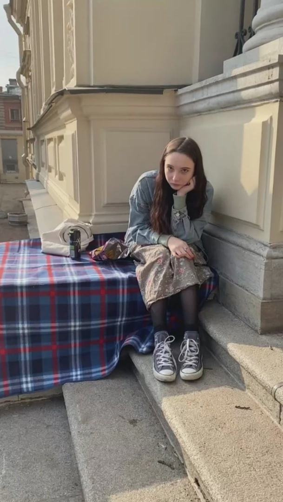

| Данные | |
|---|---|
| Аверьянова Мария, ученица 11-1 класса Второй Санкт-Петербургской гимназии. Сайт посвящен одной из ключевых личностей XX столетия, выдающемуся литератору - Иосифу Александровичу Бродскому. "Если пространство обладает собственным разумом и ведает своим распределением, то имеется вероятность, что хотя бы один из тех десяти метров тоже может вспоминать обо мне с нежностью. Тем более теперь, под чужими ногами..." (И.А.Бродский) |
 |